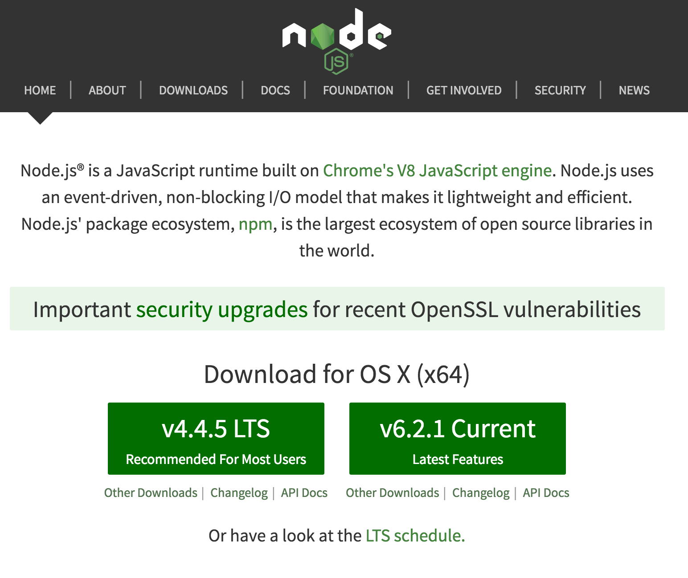
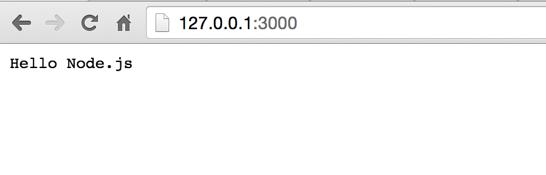
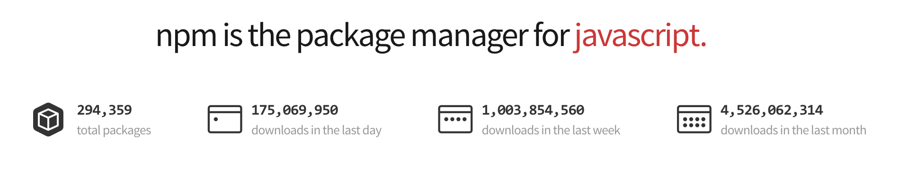

- Introduction
- 1. skill
- 2. Node.js入门
- 3. 异步流程控制
- 4. Express和微信开发入门
-
5.
Mongodb数据库
- 5.1. mongodb安装
- 5.2. 了解mvc里m的作用，以及什么样的代码该放到模型里
- 5.3. mongoose入门
- 5.4. 扩展mongoose模型statics方法和methods的区别
- 5.5. 虚拟属性
- 5.6. 回调：pre和post的差别
- 5.7. mongoose的插件机制
- 5.8. mongoose+promise
- 5.9. mongoosedao
- 5.10. 分页
- 5.11. 关系（1对1，1对多）在mongoose里如何实现
- 5.12. AGGREGATION 关联
- 5.13. 了解索引
- 5.14. 了解优化
- 5.15. mongooseconnection
- 5.16. 了解mongodb的部署与部署
- 5.17. UserModel
- 6. 微信实例和H5实践
- 7. WeUI实战
- 8. 微信支付
- 9. 项目实战《付费课程系统MVP》
- 10. 高级篇（赠送）
- 11. 答疑问题收集
- Published with GitBook
安装Node.js
Node.js是支持多个平台，Mac、Linux以及Windows，但在Windows平台下面问题较多，很多莫名其妙的问题，一般开发环境推荐用Mac或Linux（Ubuntu桌面版）。在生产环境，推荐使用CentOS或Ubuntu，选用对应的64位的LTS长期支持版本即可。
所以，这里推荐Linux安装作为标准配置，先讲一下3m安装法，之后讲一下如何从源码去编译，便于大家深入理解。
3m安装法
在各个平台都有相关的包管理工具，比如ubuntu下面有apt-get，centos下面有yum，mac下面有brew等，它们都是安装软件的非常方便的利器。但对于Node.js这个版本帝而言，它们是不合适的，首先Node.js的版本更新非常快，开发机器上可能要同时存在几个Node.js的大版本，而npm又有2.x和3.x版本的差异，国内网访问npmjs.org的镜像非常慢，综上种种问题，这里给出我总结的比较好的实践，具体如下
- nvm(Node.js Version Manager)：解决多版本共存、切换问题
- npm(Node.js Package Manager)：解决
Node.js模块安装问题，其本身也是一个Node.js模块 - nrm(Node.js Registry Manager)：解决
npm镜像访问慢的问题，提供测速，切换registry功能
nvm
nvm是一个开源的Node版本管理器，通过简单的bash脚本来管理、切换多个Node.js版本。和nvm提供类似功能的还有tj写的n，它们的功能大同小异，整体来说nvm要稍强大一下。值得注意的是nvm和n目前都不支持windows版本。
官方介绍
Node Version Manager - Simple bash script to manage multiple active node.js versions
安装nvm
在安装Node.js之前，需要先安装nvm，然后通过nvm去安装多个版本的Node.js。
首先，在终端里执行如下命令
$ curl -o- https://raw.githubusercontent.com/creationix/nvm/v0.29.0/install.sh | bash
显示结果
% Total % Received % Xferd Average Speed Time Time Time Current
Dload Upload Total Spent Left Speed
100 7731 100 7731 0 0 37998 0 --:--:-- --:--:-- --:--:-- 38083
=> Downloading nvm from git to '/home/ubuntu/.nvm'
=> Cloning into '/home/ubuntu/.nvm'...
remote: Counting objects: 4715, done.
remote: Compressing objects: 100% (3/3), done.
remote: Total 4715 (delta 0), reused 0 (delta 0), pack-reused 4712
Receiving objects: 100% (4715/4715), 1.24 MiB | 265.00 KiB/s, done.
Resolving deltas: 100% (2801/2801), done.
Checking connectivity... done.
* (HEAD detached at v0.29.0)
master
=> Appending source string to /home/ubuntu/.bashrc
=> Close and reopen your terminal to start using nvm
它的意思是通过curl下载install.sh脚本，并执行它。待执行完成后，它会把nvm命令的执行路径放到~/.bashrc文件里
我们可以用cat命令查看一下
$ cat ~/.bashrc|grep nvm
export NVM_DIR="/home/ubuntu/.nvm"
[ -s "$NVM_DIR/nvm.sh" ] && . "$NVM_DIR/nvm.sh" # This loads nvm
确认存在以上配置后，通过执行source命令，使环境变量生效
$ source ~/.bashrc
至此，我们就把nvm安装完成了。然后通过在终端里执行nvm --version查看nvm的版本号：
$ nvm --version
0.25.1
如果能够打印出版本号就证明nvm已经安装成功了。
如果系统使用的是zsh，可以把环境变量放到~/.zshrc里
$ vi ~/.zshrc
追加一下内容到~/.zshrc里
export NVM_DIR="/home/ubuntu/.nvm"
[ -s "$NVM_DIR/nvm.sh" ] && . "$NVM_DIR/nvm.sh" # This loads nvm
然后，通过执行source命令，使环境变量生效，其他和bash里操作相同
$ source ~/.zshrc
查看可安装版本
在安装之前，我们需要了解nvm可以安装哪些版本的Node.js
$ nvm ls-remote
v0.1.14
...
v0.1.104
v0.2.0
...
v0.2.6
v0.3.0
...
v0.3.8
v0.4.0
...
v0.4.12
v0.5.0
...
v0.5.10
v0.6.0
...
v0.6.21
v0.7.0
...
v0.7.12
v0.8.0
...
v0.8.28
v0.9.0
...
v0.10.0
...
v0.10.45
v0.11.0
...
v0.11.16
v0.12.0
...
v0.12.14
iojs-v1.0.0
...
iojs-v3.3.1
v4.0.0
...
v4.4.5
v5.0.0
...
v5.11.1
v6.0.0
v6.1.0
v6.2.0
v6.2.1
这么多版本，读者不需要一一了解，只需要了解LTS和Current这2个最新版本就好
说明
LTS版本指的是长期支持版本（Long-term Support），有官方支持，推荐给绝大多数用户使用，一般在生成环境上Current版本指的是当前正在开发的版本，它通常较新，功能点有变动，但没有完全稳定，在经过一段时间之后，当前版本可能会变为LTS版本，一般用于学习
以下图，Node.js官方网站为例，当前的LTS版本是4.4.5，而Current版本6.2.1

八卦一下
Node.js的版本是非常多的，比如5.x作为一个过渡版本，硬生生的给抛弃了...
安装Node.js
目前4.4.5是LTS长期支持版本，无论是开发还是产品模式都推荐使用4.4.5版本。
$ nvm install 4.4.5
Downloading https://nodejs.org/dist/v4.4.5/node-v4.4.5-linux-x64.tar.xz...
######################################################################## 100.0%
Now using node v4.4.5 (npm v2.15.5)
Creating default alias: default -> 4.4.5 (-> v4.4.5)
如果想默认使用4.4.5版本进行编译，需要指定一个default别名，具体操作如下：
$ nvm alias default 4.4.5
default -> 4.4.5 (-> v4.4.5)
此时，你输入node -v
$ node -v
v4.4.5
这样需要说明一下，当安装完Node.js之后，会把node命令在环境变量里，你可以在终端里任何位置使用它。node命令是用于执行Node.js代码的，因为JavaScript是脚本语言，所以node命令实际上是Node.js代码的的解释器。
前面讲了，4.4.5版本是LTS长期支持版本，那么如果我想玩玩更多es6的东西呢？
目前现状是4.4.5支持58%的es6特性，而6.2.1支持96%的es6特性，比如let等在4.x下的非严格模式是不支持 ，这时候我就需要使用6.x版本了。
安装最新的6.x版本
$ nvm install 6
Downloading https://nodejs.org/dist/v6.2.1/node-v6.2.1-linux-x64.tar.xz...
######################################################################## 100.0%
Now using node v6.2.1 (npm v3.9.3)
切换到6.x版本下面
$ nvm use 6
Now using node v6.2.1 (npm v3.9.3)
$ node -v
v6.2.1
此时，你的Node.js代码就在6.x版本下执行了，可以使用任何6.x支持的特性。
那么，如何知道我本机安装过哪些Node.js版本呢？
$ nvm ls
v4.4.5
-> v6.2.1
system
default -> 4.4.5 (-> v4.4.5)
node -> stable (-> v6.2.1) (default)
stable -> 6.2 (-> v6.2.1) (default)
iojs -> iojs- (-> system) (default)
说明
- 一共有3个版本，一个是system系统默认，另外2个是通过nvm安装的
-> v6.2.1代表当前是6.x版本default -> 4.4.5 (-> v4.4.5)iojs -> iojs- (-> system) (default)此处不同机器可能不一样，如果之前通过apit-get或brew安装node，此处会有显示
总结一下，这节一共讲了nvm的5个常用命令
- 安装：
nvm install 4.4.5 - 设置默认:
nvm alias default 4.4.5 - 切换版本：
nvm use 6 - 列出当前本地版本：
nvm ls - 列出远端可安装版本：
nvm ls-remote
可以说这5个命令在开发过程中足够用，其实nvm还有很多高级特性，比如在项目根目录创建.npmrc指定特定的Node.js版本，它就切换到对应版本，类似的很多，就不一一列举了，读者自行体会吧。
Hello Node.js
通过nvm已经安装完成Node.js，是时候来个 hello world 代码了。一般我们用Node.js做的最多是web server开发，就来个最简单的http server吧。
创建hello_node.js文件，写下下面的代码
var http = require('http');
http.createServer(function (req, res) {
res.writeHead(200, {'Content-Type': 'text/plain'});
res.end('Hello Node.js\n');
}).listen(3000, "127.0.0.1");
console.log('Server running at http://127.0.0.1:3000/');
说明
- 1）引用了
Node.js内置的http模块 - 2）通过
http.createServer创建了一个http服务 - 3）通过
listen方法，指定端口和ip，启动该服务 - 4）
res是http协议里的response（响应）的别名，通过res控制对浏览器的操作，设置返回状态码是200，设置header里的'Content-Type'是'text/plain'类型，最后返回'Hello Node.js\n'文本。
通过短短几行代码就可以创建一个http服务，是不是非常简单啊？
执行如下
> node hello_node.js
Server running at http://127.0.0.1:3000/
通过node解释器，执行hello_node.js文件里的Node.js代码，这是典型的Node.js执行过程，脚本不需要编译，整体来说还是比较简单的。
访问浏览器，结果如图

我们把代码稍稍改一下，创建hello_node_es6.js文件，写下下面的代码
// "use strict";
const http = require('http');
http.createServer((req, res) => {
let status = 200;
res.writeHead(status, {'Content-Type': 'text/plain'});
res.end('Hello Node.js\n');
}).listen(3000, "127.0.0.1");
console.log('Server running at http://127.0.0.1:3000/');
说明
var变成了consthttp.createServer里的匿名函数变成es6里的箭头函数- 为了演示方便，用
let声明了status变量
实现的效果和原理都是一模一样的，只是语法上有些许不同而已。
首先，我们在4.x下执行看看
$ nvm use 4
Now using node v4.4.5 (npm v2.15.5)
$ node hello_node_es6.js
/Users/sang/workspace/17koa/book-source/nodejs/hello_node_es6.js:4
let status = 200;
^^^
SyntaxError: Block-scoped declarations (let, const, function, class)
not yet supported outside strict mode
at exports.runInThisContext (vm.js:53:16)
at Module._compile (module.js:413:25)
at Object.Module._extensions..js (module.js:452:10)
at Module.load (module.js:355:32)
at Function.Module._load (module.js:310:12)
at Function.Module.runMain (module.js:475:10)
at startup (node.js:117:18)
at node.js:951:3
这里报的是语法错误，块作用域声明(let, const, function, class) 在严格模式外是不支持的。也就是说在Node.js 4.x版本里，如果你不是用严格模式，你是无法是let、const、 function、class这些关键字的。不是Node.js的4.x版本不支持它们，而是严格模式外是不支持。
如果是在文件第一行增加如下代码
"use strict";
它就是可以正常执行的，上面的代码是把这行注释掉的，目的就是为了演示在6.x下，即使非严格模式，这些语法也是可以正常识别的，下面我们切换到6.x下面
$ nvm use 6
Now using node v6.2.1 (npm v3.9.3)
$ node hello_node_es6.js
Server running at http://127.0.0.1:3000/
至此，我们分别演示了使用nvm在Node.js 的 4.x和6.x版本下的版本切换，希望大家可以理解nvm的作用，以及对Node.js和es6有一个简单的认识，后面章节会详细讲解。
npm
NPM（node package manager），通常称为node包管理器。顾名思义，它的主要功能就是管理node包，包括：安装、卸载、更新、查看、搜索、发布等。它最开始的初衷是只是Node.js包管理器，随着前端技术react、webpack、browserify等发展，目前npm的定位是广义的包管理器，包括js、react、mobile、angularjs、browsers、jquery、cordova、bower、gulp、grunt、browserify、docpad、nodebots、tessel等，是开源世界里最大、生态最健全的包管理器，包的总数已经超过29.4万个，日下载量超过1.7亿。

NPM是随同Node.js一起安装的包管理工具，能解决Node.js代码部署上的很多问题，常见的使用场景有以下几种：
- 允许用户从NPM服务器下载别人编写的第三方包到本地使用。
- 允许用户从NPM服务器下载并安装别人编写的命令行程序到本地使用。
- 允许用户将自己编写的包或命令行程序上传到NPM服务器供别人使用。
由于新版的Node.js已经集成了npm，所以之前安装Node.js时npm也一并安装好了。同样可以通过输入 "npm -v" 来测试是否成功安装。命令如下，出现版本提示表示安装成功:
$ npm -v
2.3.0
安装npm
如果你安装的是旧版本的 npm，可以很容易得通过 npm 命令来升级，命令如下：
$ [sudo] npm install npm -g
/home/ubuntu/.nvm/versions/node/v4.4.5/bin/npm -> /home/ubuntu/.nvm/versions/node/v4.4.5/lib/node_modules/npm/bin/npm-cli.js
npm@3.9.5 /home/ubuntu/.nvm/versions/node/v4.4.5/lib/node_modules/npm
如果Node.js是通过nvm安装的，可以不使用sudo临时授权的。当然，也可以安装指定的某个版本，比如npm 2.9之后支持了私有模块
$ node -v
v4.0.0
$ npm -v
2.14.2
$ [sudo]npm install -g npm@2.9
使用 npm 安装模块
npm 的包安装分为本地安装（local）、全局安装（global）两种，从敲的命令行来看，差别只是有没有 -g 而已，
语法格式如下：
$ npm install [-g] <Module Name>
本地安装
- 将安装包放在
./node_modules下（运行npm命令时所在的目录），如果没有node_modules目录，会在当前执行npm命令的目录下生成node_modules目录。 - 可以通过
require()来引入本地安装的包。
以下实例，我们使用 npm 命令安装常用的 Node.js 调试模块 debug:
$ npm install debug
安装好之后，debug 包就放在了工程目录下的 node_modules 目录中，因此在代码中只需要通过 require('debug') 的方式就好，无需指定第三方包路径。
var debug = require('debug')('xxx');
全局安装
- 如果不是使用
nvm安装的，安装包将放在/usr/local下，如果是使用nvm装的，将安装包放到用户目录的nvm版本对应的bin目录~/.nvm/versions/node/v6.0.0/bin/里 - 可以直接在命令行里使用。
- 不能通过
require()来引入本地安装的包。
采用nvm安装Node.js之后，基本不会遇到全局安装时权限问题。安装包放的是用户目录的nvm版本对应的bin目录里，当然不用加sudo了，尤其对于初学者，经常被Linux的权限坑死。
区分npm版本
npm 2.x和3.x是不一样的，需要区分，避免很多问题，比如有的模块在2.x是正常的，而在3.x下就莫名其妙的不好用，所以值得大家花点时间理解一下这个问题
首先，看一下2.x的npm结构，为了演示方便，我们统一在2.x和3.x里都安装一个名为debug的用于根据环境变量来决定是否打印调试日志的Node.js模块
$ cd book-source/nodejs/npm/2.x
// 初始化package.json，一路回车即可
$ npm init
$ nvm use 4
Now using node v4.4.5 (npm v2.15.5)
$ npm -v
2.15.5
$ npm i -S debug
npm WARN package.json 2.x@1.0.0 No description
npm WARN package.json 2.x@1.0.0 No repository field.
npm WARN package.json 2.x@1.0.0 No README data
debug@2.2.0 node_modules/debug
└── ms@0.7.1
$ tree .
.
├── node_modules
│ └── debug
│ ├── History.md
│ ├── Makefile
│ ├── Readme.md
│ ├── bower.json
│ ├── browser.js
│ ├── component.json
│ ├── debug.js
│ ├── node.js
│ ├── node_modules
│ │ └── ms
│ │ ├── History.md
│ │ ├── LICENSE
│ │ ├── README.md
│ │ ├── index.js
│ │ └── package.json
│ └── package.json
└── package.json
这里使用的NPM@2.x版本，它的依赖是嵌套依赖的，比如当模块依赖debug模块，而debug模块又依赖ms模块，这样就导致里如下结构
下面筛选一下，tree命令的-d选项是只显示目录的意思
tree . -d
.
└── node_modules
└── debug
└── node_modules
└── ms
4 directories
很明显，它们的依赖关系很清晰，但如果不同模块里依赖了相同模块呢？彼此互相依赖、各种版本的依赖交织在一起就非常痛苦，所以npm被诟病比较慢，才出现了ied这样的npm替代方案
实际上，npm也是做了改进的，npm@3.x里有改善的
$ cd book-source/nodejs/npm/3.x
// 初始化package.json，一路回车即可
$ npm init
$ nvm use 6
Now using node v6.0.0 (npm v3.8.6)
$ npm i -S debug
2.x@1.0.0 /Users/sang/workspace/17koa/book-source/nodejs/npm/2.x
└─┬ debug@2.2.0
└── ms@0.7.1
$ tree .
.
├── node_modules
│ ├── debug
│ │ ├── History.md
│ │ ├── Makefile
│ │ ├── Readme.md
│ │ ├── bower.json
│ │ ├── browser.js
│ │ ├── component.json
│ │ ├── debug.js
│ │ ├── node.js
│ │ └── package.json
│ └── ms
│ ├── History.md
│ ├── LICENSE
│ ├── README.md
│ ├── index.js
│ └── package.json
└── package.json
3 directories, 15 files
这里同样是debug模块，不过在3.x下面，debug和ms是同级的
$ tree . -d
.
└── node_modules
├── debug
└── ms
3 directories
npm3现在的模块目录结构扁平了，但又保持了树和依赖版本共存的可能性,node 5.0之后已经升级到了npm3，也就是npm3已经普遍可用了。更多npm3变更见官方文档
最简单的理解如下图
- npm 2.x依赖都在当前模块下面，所以路径会比较深
- npm 3.x是扁平式结构，当依赖多个版本的时候，才会像npm 2.x的方式

nrm
Node.js和其他语言一样，默认将模块托管在npmjs.org，这是官方的registry（源）,registry是指从哪个源下载Node.js模块，当然其他组织或个人也是可以自建npm registry（源）的，这些非官方的镜像会定期的和npm官方registry（源）进行同步，一般在10分钟左右一次。
npm官方registry（源）在国外托管，所以对于国内来说，速度上有慢一些，而且Node.js本身又是小而美哲学导致的多模块依赖，有时慢的让人抓狂，所以就近选择一些速度更快的源是刚需。
其实npm是提供了这种配置的
$ npm config set registry <registry url>
比如官方的registry（源）是https://registry.npmjs.org/
$ npm config set registry https://registry.npmjs.org/
如果同时有几个registry（源）需要切换，整个人都要崩溃了。。。
Nrm就是专门用于解决这个问题，它可以帮助你简单、快速的在不同的npm registry（源）之间进行切换，它默认内置了很多常用的源，包括npm、cnpm、taobao、 nj、rednpm、npmMirror，当然你可以自己通过nrm add维护自己的源。
安装nrm
nrm本身是Node.js模块，所以它是通过npm来安装的，它是一个二进制模块，需要使用--global参数进行全局安装
$ [sudo] npm install --global nrm
测速
为了确定哪个registry（源）下载速度更快，我们需要进行测速，通过测速结果，来决定具体使用哪个registry（源）
测试使用nrm test命令，非常简单、实用：
$ nrm test
* npm ---- 1623ms
cnpm --- 561ms
taobao - 2184ms
nj ----- 2382ms
rednpm - Fetch Error
npmMirror 3999ms
从测速结果上，可以看出cnpm是最快的，虽然每次测速都有浮动，但整体来说cnpm和taobao的源还是比较快的，尤其是在阿里云上部署，按需取用就好。
查看源
一般，我们需要了解自己当前使用的是哪个registry（源），这取决于2点
- 知道当前使用的从哪个registry（源），是否下载速度最快的
Node.js模块只能发布在官方源，如果是其他源，是无法publish（发布）成功的
查看源的状态通过nrm ls命令即可
$ nrm ls
* npm ---- https://registry.npmjs.org/
cnpm --- http://r.cnpmjs.org/
taobao - http://registry.npm.taobao.org/
nj ----- https://registry.nodejitsu.com/
rednpm - http://registry.mirror.cqupt.edu.cn
npmMirror https://skimdb.npmjs.com/registry
说明
*标识说明它是当前使用的registry（源）npm是registry（源）名字，可以在nrm里用于切换的名字- 当前版本
nrm共提供了6个registry（源）
切换源
记住registry具体url地址可能有点难为人，那换成名字呢？nrm就是通过名字来切换的。
通过nrm use <registry name>可以快速的切换registry（源）
$ nrm use cnpm
Registry has been set to: http://r.cnpmjs.org/
此时，查看一下npm源的情况，就会知道当前采用的是cnpm源
$ nrm ls
npm ---- https://registry.npmjs.org/
* cnpm --- http://r.cnpmjs.org/
taobao - http://registry.npm.taobao.org/
nj ----- https://registry.nodejitsu.com/
rednpm - http://registry.mirror.cqupt.edu.cn
npmMirror https://skimdb.npmjs.com/registry
从源码编译
Node.js源码是典型的c/c++项目，使用make作为构建工具，所以和其他c/c++从源码编译没什么区别，传统的3步，只是准备好依赖即可
安装依赖
sudo apt-get install g++ curl libssl-dev apache2-utils git-core build-essential
下载源码，并编译
git clone https://github.com/nodejs/node.git
cd node
./configure
make
sudo make install
总结
本节没有采用apt-get或brew这样的直接安装方式，而是通过nvm进行安装，希望大家能够体会在Node.js快速发展的今天，可以随时切换版本，在线上环境保守，在学习时超前，无论出于哪种目的，3m安装法都是比较好的选择。
最后讲了如何从源码进行编译，这部分主要是c/c++项目的通用编译法，如果可以，尽量掌握，在后面npm里开发c/c++ addons的时候会用到的。